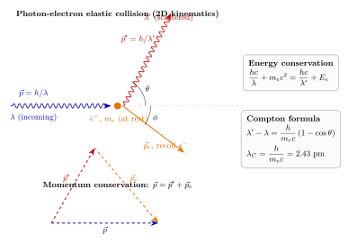

Compton 散射为什么是"光是粒子"的关键实验?
上一节我们看了光栅: 波数越多, 条纹越锐利; 那是十足的波动行为, 多缝干涉把光"按频率排开". 衍射光栅甚至就是分光光度计的心脏. 到这里, 我们似乎可以长舒一口气地说——光, 就是电磁波, Maxwell 方程组和 Huygens 二次波就足以描述它的全部行为.
可是在 X 射线的领域里, 一个再简单不过的问题就把这种自信打得稀碎: X 光打在一块石墨上, 会产生散射光; 如果把散射光引进一台 Bragg 分光仪去看它的波长, 会看到什么?
按照 19 世纪以来的经典图像, 答案毫无悬念: 散射光的波长应当和入射光一模一样. Compton 在 1923 年做了这个实验, 看到的却是波长增加了一点点——且增加量明明白白地跟散射角挂钩. 这一点点, 就把"光是波"的叙事撕开了一道口子, 把"光子"这个词不可逆地塞进了物理学. 本节我们就来跟着 Compton 走一遍他的推理.
一、经典预言: Thomson 散射要求波长不变
先把经典的答案摆出来, 这样才知道实验是在打谁的脸. 考虑一束入射电磁波, 电场为 $\vec E = \vec E_0 \cos(\omega t - \vec k\cdot\vec r)$. 一个质量为 $m_e$、电荷为 $-e$ 的自由电子被这个电场驱动, 运动方程就是牛顿第二定律: $$ m_e \ddot{\vec r} = -e\vec E_0 \cos(\omega t). $$ 做一个稳态近似, 电子以同样的角频率 $\omega$ 振荡, 其加速度幅值为 $a_0 = eE_0/m_e$.
被加速的电荷会再辐射电磁波, 这是 Larmor 公式的直接结论. 关键是这个再辐射的频率——电子的加速度信号频率就是 $\omega$ (至多再加上一个由于角分布形成的偏振因子), 所以出去的波也是 $\omega$. 换成波长就是 $\lambda' = \lambda$.
这就是 Thomson 散射的核心论断: 自由电子把入射波弹性地散射出去, 角分布是 $1+\cos^2\theta$ 形状的, 总截面是 $\sigma_T = (8\pi/3)r_e^2 \approx 6.65\times 10^{-29}$ m², 但频率和波长都保持不变. 在可见光波段和低频 X 射线波段, 这个图像确实大体对得上. 真正的麻烦, 要到硬 X 射线和 $\gamma$ 射线那里才会冒出来.
Compton 本人其实是在研究 X 射线从各种轻元素 (碳、石蜡) 散射后的角分布和谱分布. 他用到的 X 光源是钼靶 K_α 特征线, 波长 $\lambda \approx 0.711$ Å $= 71.1$ pm, 光子能量约 17.4 keV. 在入射方向附近, 散射光看起来与入射光同波长; 但当他把探头转到 $90°$, 再到 $135°$ 时, 分光仪上出现了两根线——一根位置不变 (对应被束缚电子的 Thomson 散射), 另一根则明显向长波一侧移动, 而且越往大角方向挪, 偏移越大. 经典图像里, 第二根线本不应该存在.
二、粒子图像: 光子与电子的相对论弹性碰撞
Compton 接受了一个大胆的设定: X 光由离散的粒子组成, 每个粒子携带能量 $E = h\nu$ 和动量 $p = h\nu/c = h/\lambda$. 这个动量-波长的关系是 Einstein 在 1916 年论光量子的动量时写出的, 和质量为零的相对论粒子 $E = pc$ 一脉相承. 散射问题就被重构为: 一颗光子撞上一颗 (几乎) 静止的自由电子, 发生弹性碰撞, 遵守能量动量守恒.
为什么可以把石墨里的外层电子当作自由的? 因为外层电子的束缚能 (几 eV 到几十 eV) 比 17 keV 的入射光子能量小三个数量级, 在碰撞的能量尺度上, 电子就像一个自由、静止的靶. 这是一个重要的极限检验——如果入射光能量低到与束缚能可比 (例如可见光 2 eV 对应束缚态), 电子就动不了, 散射必须交回给原子作整体, 那时确实能恢复 Thomson 的"同频率"结果.
好, 回到碰撞. 设入射光子沿 $+x$ 方向, 动量 $p = h/\lambda$, 能量 $pc$; 电子静止, 能量 $m_ec^2$. 碰撞后: 光子沿 $\theta$ 角方向飞出, 动量 $p' = h/\lambda'$; 电子沿 $\phi$ 角反冲, 动量 $p_e$, 能量 $E_e = \sqrt{p_e^2c^2 + m_e^2c^4}$.

能量守恒: $$ \frac{hc}{\lambda} + m_ec^2 = \frac{hc}{\lambda'} + \sqrt{p_e^2c^2 + m_e^2c^4}. \tag{1} $$ 动量守恒 (分解到 $x$ 轴和垂直于 $x$ 轴的方向): $$ \frac{h}{\lambda} = \frac{h}{\lambda'}\cos\theta + p_e\cos\phi, \qquad 0 = \frac{h}{\lambda'}\sin\theta - p_e\sin\phi. $$
三、推导 Compton 公式
上面三个方程, 四个未知量 ($\lambda', p_e, \phi,$ 以及我们想求的 $\Delta\lambda$) 中, $\phi$ 其实只是电子方向, 我们最终关心的是 $\lambda' - \lambda$. 所以把 $\phi$ 消掉就好.
第一步, 用动量守恒的两个分量求 $p_e^2$. 把两个方程分别平方再相加, 利用 $\cos^2\phi + \sin^2\phi = 1$: $$ p_e^2 = \left(\frac{h}{\lambda}\right)^2 + \left(\frac{h}{\lambda'}\right)^2 - 2\frac{h^2}{\lambda\lambda'}\cos\theta. $$
第二步, 从能量守恒把电子总能量 $E_e$ 单独拿出来, 再平方: $$ E_e^2 = \left[\frac{hc}{\lambda} - \frac{hc}{\lambda'} + m_ec^2\right]^2. $$ 代入相对论能动量关系 $E_e^2 = p_e^2c^2 + m_e^2c^4$, 把 $p_e^2$ 换成上一步的表达式. 经过一番耐心的展开 (把 $(hc/\lambda)^2$, $(hc/\lambda')^2$, $(m_ec^2)^2$ 这些对称项消掉), 剩下的就是: $$ m_ec^2\left(\frac{hc}{\lambda} - \frac{hc}{\lambda'}\right) = \frac{h^2c^2}{\lambda\lambda'}(1 - \cos\theta). $$ 两边同除 $m_ec^2 \cdot hc/(\lambda\lambda')$, 得到:
$$ \boxed{\; \lambda' - \lambda = \frac{h}{m_ec}\,(1 - \cos\theta) \;} \tag{2} $$
这就是 Compton 公式. 注意它的结构之简洁: 左边完全是观测量 (入射和散射波长), 右边只含三个基本常数 $h, m_e, c$ 和散射角 $\theta$——入射波长本身不出现. 偏移量只由电子质量决定.
把 $h/m_ec$ 这个长度量单独命名为电子 Compton 波长: $$ \lambda_C = \frac{h}{m_ec} = \frac{6.626\times 10^{-34}}{9.109\times 10^{-31}\cdot 2.998\times 10^8}\,\mathrm{m} \approx 2.426\times 10^{-12}\,\mathrm{m} = 2.426\,\mathrm{pm}. $$ 这是一个纯属于电子的长度. 它不是电子的经典半径 $r_e = e^2/(4\pi\epsilon_0 m_ec^2) \approx 2.82\times 10^{-15}$ m, 也不是束缚在氢原子里的 Bohr 半径 $a_0 \approx 52.9$ pm, 而是一个由 $\hbar$ 设定的、电子定位精度极限级别的长度. 它在后来 Dirac 方程、反粒子、量子场论里还会反复出现.
四、数字代入、可见光的极限与历史坐标
数值估算一: 90° 散射. 取 $\theta = 90°$, $1 - \cos 90° = 1$, 所以 $$ \Delta\lambda (90°) = \lambda_C = 2.43\,\mathrm{pm}. $$ Compton 用的 Mo K_α 线 $\lambda = 71.1$ pm, 相对偏移 $\Delta\lambda/\lambda \approx 3.4\%$. 用的分光仪精度远比这细, 所以轻松测得出来. 在 $\theta = 180°$ (背向散射), $1-\cos 180° = 2$, 波长偏移达到 $2\lambda_C = 4.85$ pm, 对应相对偏移约 $6.8\%$——更明显.
数值估算二: 可见光的命运. 换成可见光, 比如 $\lambda = 550$ nm $= 5.5\times 10^5$ pm. 同样让它 90° 散射, 绝对偏移还是 $\Delta\lambda = 2.43$ pm, 但相对偏移变成 $$ \frac{\Delta\lambda}{\lambda} = \frac{2.43}{5.5\times 10^5} \approx 4.4\times 10^{-6}. $$ 也就是千万分之四. 这比任何 19 世纪、乃至 20 世纪初的可见光分光仪所能测到的精度都小得多——所以 Compton 之前, 物理学家做了无数次可见光散射实验, 不可能看到这个效应. 这是一个天然的极限检验: 只有当光子动量 $p = h/\lambda$ 大到可以和电子发生"对撞级别"的交换时 (也就是 $\lambda$ 与 $\lambda_C$ 同数量级时), 波长偏移才能脱离分光仪噪声成为可观测量. 硬 X 光和 $\gamma$ 光正好坐在这个窗口里, 这就是为什么 Compton 效应直到 X 射线时代才露面.
更进一步地, 这个极限也回头解释了为什么 Thomson 散射在可见光波段那么好用——并不是 Compton 公式不成立, 而是它在 $\lambda \gg \lambda_C$ 的极限下退化为 $\lambda' \approx \lambda$, 两种图像在低能端接驳上了. 经典电磁学和量子光学并不矛盾, 它们是同一座山的两个海拔.
历史坐标. 让我们把 Compton 1923 年这一击放回当时的物理图景里. 1905 年 Einstein 写下光量子假说, 用 $h\nu$ 的能量包解释光电效应, 当时绝大多数同行——包括 Planck 和 Bohr——都不相信光会是真正的粒子, 最多承认能量交换的"量子化"是一个形式上的便利. 1916 年 Millikan 用精细的光电实验把 Einstein 的公式一字一句测了下来, 同时直言他"不相信光量子", 只是承认数字对得上. 1923 年 Compton 的 X 光散射实验把最后一根挡箭牌拔掉了: 如果只讲能量量子化不讲动量, 你就无法预言散射光的波长偏移; 你必须让光子带着 $h/\lambda$ 的动量像粒子那样撞出去. 这个实验直接带给 Compton 1927 年的诺贝尔物理学奖, 也让"光子"这个名词从一种比喻变成一种粒子. Einstein 本人在听到 Compton 的结果后说: "现在, 我再也不觉得我关于光量子的假说是草率的了."
效应还在续写: 把入射和靶方向倒过来, 让高能电子撞上低能光子, 光子会被"踢"到高频——这就是逆 Compton 散射. 宇宙微波背景 (CMB) 光子穿过星系团时, 被团中热电子 ($T\sim 10^7$ K) 逆 Compton 散射, 谱向高频一端畸变, 形成 Sunyaev–Zel'dovich 效应, 至今仍是我们称量遥远星系团的主要手段之一. 同一个公式 (2), 换一个方向参照系, 就从 20 世纪初的实验室走到了宇宙学的尺度上.
小结
Compton 散射是"光是什么"这个追问里一记决定性的回答: 不管你多爱波动图像, 都必须承认在和物质交换能量和动量时, 光表现为一颗颗带着 $p = h/\lambda$ 的粒子. 公式 (2) 的美妙之处在于, 它只用三个基本常数——$h$、$m_e$、$c$——就把"光的粒子性"和"电子的量子尺度"一次性捆在了一起. 这一捆, 就是 20 世纪物理学通往量子电动力学的入场券. 下一节我们会换一个方向: 不再让光子去撞电子, 而是让一束精心设计的光冷却原子——这里光子还是粒子, 但交换的动量不再是"撞一下", 而是上百万次的温柔推挤.
▲